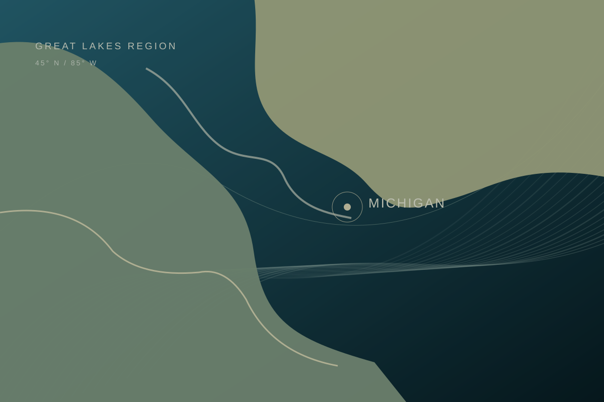

FIELD / GEOGRAPHY
Explore the forces, forms, and ideas behind what you see.
Every story is written as a starting point: grounded in recognized educational sources, approachable without specialized training, and accompanied by original illustrations.
EXPLORE THE FULL LIBRARY ↗
IN THIS CATEGORY